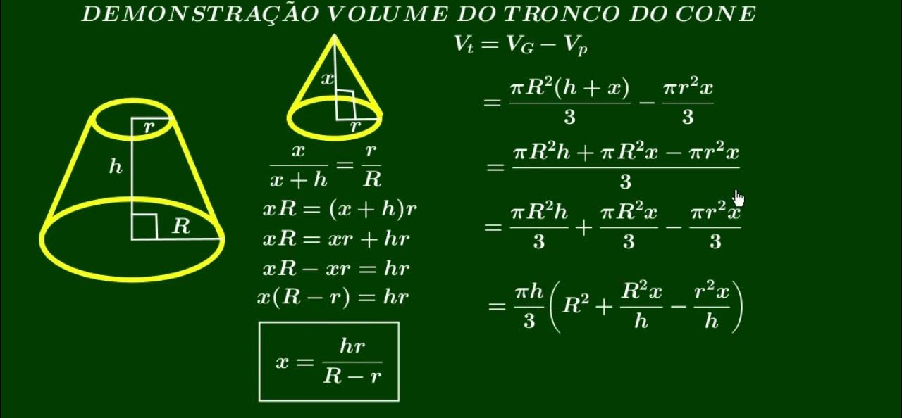

Cones São cÁlindros mas sem uma das bases, formando uma espécia de triângulo visto de lado, de um termo mais técnico é a reunião dos segmentos de reta com uma extremidade no vértive V e a outra nos pontos de um cÁrculo, seus elementos são : Uma base Circular, Um vértice,Geratrizes, Raio da Base e altura.
Cone :
Elementos do cone :
Classificação dos Cones : são respectivamente, Cone oblÁquo, cone Reto, e Cone de Revolução.
Secção meridiana é a região determinada pela intersecção do Cone com um plano que contém o eixo, como se fosse cortar o Cone e abrir ele, igual ao CilÁndro
área da lateral
➜ AL = 𝝅𝒓h
área Total
➜ AT = 𝝅𝒓(𝒓 + 𝒈)
Volume
➜ 𑉠=
𝝅𝒓²𝒉/3
Área Lateral:
Área Total:
Volume:
Seção de um cone por um plano paralelo à base:
Seccionando um cone por um plano paralelo à base, separamos
em dois sólidos: uma cone menor e semelhante e um tronco de cone.
Seção e exemplo :
 área da lateral
➜ AL = 𝐴L2 − 𝐴l1
área Total
➜ AT = AL + 𝐵 + b
Volume
➜ 𑉠= (ğ…h)/3.(R2 + Rr + r2)
Área Lateral:
Área Total:
Volume:
Cones
Troncos de Cones